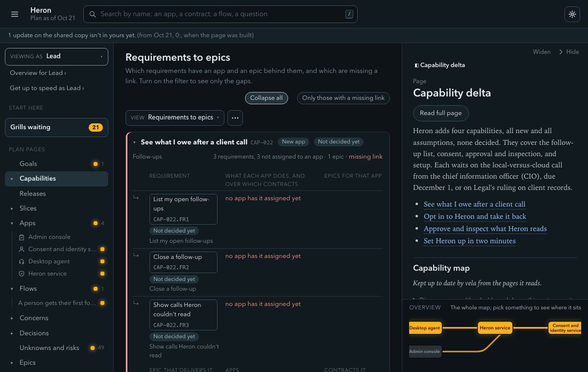

GoalWhy are we doing it?
A goal row carries a Trace: line pointing at the capabilities and unknowns it rests on.
Trust should rest on things you can check yourself. This page says what a passing check means, what it can't tell you, how the chain from goal to ticket holds together, and what hasn't been proven yet.
When vela check passes with no errors, a reader can rely on these. They are things a script can see in the pages.
answered ledger row names a registered source, or a quote really on the page it cites.**Overide:** is caught.At the stricter --gate epics, three more hold: every changed capability is in some epic, every new or changed contract is delivered by one, and every concern marked addressed has an epic criterion that does the work.
Links: E105 (test_links.py). States and decisions: E303, E317 (test_items.py). Allocation: E330 to E333 (test_allocation.py). Ledger evidence: E801, E802 (test_ledger.py). Overrides: E321, E322, E398 (test_override_until.py). Generated blocks: W402 (test_render.py). Diagrams: E604 (test_diagram_parse.py). Epics gate: T1 to T7, E805 (test_trace.py). All codes are defined in rules.py and listed in schema.py.
Being honest about this matters more than any claim above.
questions.yaml on October 21, 2026) fires per subject someone has typed. If nobody types "the plan holds customer money," the money questions never fire. The review checkpoints exist to catch that, and can miss too.vela check reported "0 errors, 54 warnings" and vela check --gate epics reported 29 errors, mostly high-severity questions nobody had handled (October 21, 2026, commit 77940a68). A green plain check means the plan is well formed, not finished.vela record add can tell their words from the model's. Where they don't, the line is marked unverified. The command line refuses; the hooks are earlier feedback, "never the gate."vela check skips docs/. vela tickets check holds those traces instead.When the plan doesn't know, it says so. Breakdown writes a release fit of "cannot tell" and why: "Sizes add to about 20 to 37 days for one engineer, and the design names four builders but not how many days each has."
The catalog finds only what is written into it, and W809 is a partial net (Questions and the ledger, README, test_untyped.py). Hooks are earlier feedback (hooks.json, test_hooks.py, test_said.py, test_record_add.py). vela check skips docs/ (Layout). The flow check reads the plan only (Flow check). Build progress is each team's own (Generated blocks). Release fit "cannot tell" is in the breakdown skill, pinned by test_tickets.py.
Traceability means walking from any item to the reason for it and back. Click a link in the chain.
A goal row carries a Trace: line pointing at the capabilities and unknowns it rests on.
Something the business can do after the change, such as "see what I owe after a client call." Its requirements live on its page.
Written as CAP-023.FR1, with acceptance criteria as bullets. It names no app.
A row on the app's page naming the requirement, the one-sentence share, the contract it goes through and a state. The format example reads accepts the order, rejects fractions and shorting, records the fill | CON-006 | assumption.
Its criteria end with a line such as Trace: CAP-022.FR1, CON-025 · AC1, naming the requirement and contract with a stable criterion number.
Names the requirements, contracts and epic criteria it covers, and its slice. It also traces to a design component, which traces to the allocated share.
Nothing is added on the way out. Each ticket traces back to its story, the story to the epic, the epic to the requirement.
The dashboard walks the same chain from a capability down to its requirements, apps, epics and contracts, and points at the links that are missing.

Stated in Epics and traceability (rules T1 to T7), Requirements and allocation and Generated blocks. Enforced by trace.py. Pinned by test_trace.py, test_allocation.py, test_trace_blocks.py.
Trust should rest on things you can run.
.githooks/gate runs the semgrep rules, a ruff scan, a format-file sync check, vela check on the template and the worked example, and the pytest suite. About 230 test files hold about 3,200 test functions (counted October 21, 2026 with ls and grep: a count of tests, not proof they pass on your machine). Its full mode prints every skip and why.docs/ must parse, and a test fails if this site's pages are out of date with their source.A prompt that has quietly learned the test looks great and helps no one. So tests/sim/ runs a simulated solution lead (another model) through real sessions, with a hidden brief of facts, wrong beliefs and gaps. Four guards against teaching to the test:
--reveal.test_sim_seal.py fails if a persona's names or any six-word run of brief text appears under plugin/.The verdict is recall and precision. "Recall up with precision down is never a GO." The judge is itself a model, so every score cites a turn, and the simulator "can't say whether it's faster than plain Markdown for the user. Only real sessions under the kill rule can." The design notes say these runs "found most of the gaps fixed so far" but give no dates, counts or scores, and this site hasn't re-measured them.
Stated in .githooks/gate, CONVENTIONS.md (its opening) and tests/sim/README.md. Enforced by the gate and the plugin's CI workflow vela-check.yml. Pinned by test_diagram_parse.py, test_final_wave.py, test_explorer_browser.py, test_sim_seal.py, test_sim_precision.py, test_sim_compare.py.
Stated in the repository's own README and design notes. We haven't added to the list or smoothed it over.
check and the viewer."main. "Each is tested on local git repos only."~/.claude yet./vela:where answers both on a given machine.A reasonable way to adopt it is the README's own: run a few real sessions on a small initiative, keep the kill rule in mind, and watch the first real run of each item above.
Stated in the README ("Later"), "What is still open" in PHILOSOPHY.md, and the guide (Cowork). A test keeps the README honest about what hasn't run against GitHub, test_final_wave.py.